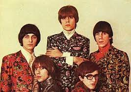

Los Gatos
Los Gatos es una banda argentina de rock formada en la ciudad de Buenos Aires en 1967. Fueron pioneros del rock nacional y uno de los grupos más influyentes en la escena musical argentina de los años 60.
La banda estaba compuesta por Litto Nebbia en voz y teclados, Ciro Fogliatta en teclados y armónica, Kay Galiffi en bajo, Oscar Moro en batería y Alfredo Toth en guitarra. Su música era una mezcla de rock and roll, blues y música psicodélica, con letras en español que hablaban sobre el amor, la libertad y la juventud.
Los Gatos fueron una de las primeras bandas en grabar un álbum de rock en español en Argentina, titulado "Los Gatos" en 1967. El álbum fue un gran éxito y estableció a la banda como una fuerza importante en la música argentina. Algunos de sus temas más conocidos incluyen "La Balsa", "Ayer Nomás" y "El Rey Lloró".
Los Gatos fueron una de las primeras bandas en grabar un álbum de rock en español en Argentina, titulado "Los Gatos" en 1967. El álbum fue un gran éxito y estableció a la banda como una fuerza importante en la música argentina. Algunos de sus temas más conocidos incluyen "La Balsa", "Ayer Nomás" y "El Rey Lloró".
Además de su música, Los Gatos también fueron importantes por su imagen y estilo, que reflejaba la contracultura y el espíritu rebelde de los jóvenes argentinos de la época. Con sus largas cabelleras y atuendos llamativos, la banda se convirtió en un símbolo de la juventud argentina y una inspiración para muchas otras bandas de rock de la época.
Otro aspecto importante de Los Gatos fue su capacidad de fusionar diferentes géneros y estilos musicales, creando un sonido único que se convirtió en una de las características distintivas del rock argentino. Su influencia se puede ver en bandas posteriores como Soda Stereo, Los Enanitos Verdes y La Renga, entre otras.
A pesar de que su carrera fue corta, Los Gatos son recordados como uno de los grupos más importantes en la historia del rock argentino y un precursor de la música rock en español. Su legado sigue vivo a través de su música, que ha sido reeditada y remasterizada en varias ocasiones, así como por los homenajes y tributos que se les han hecho en años posteriores.